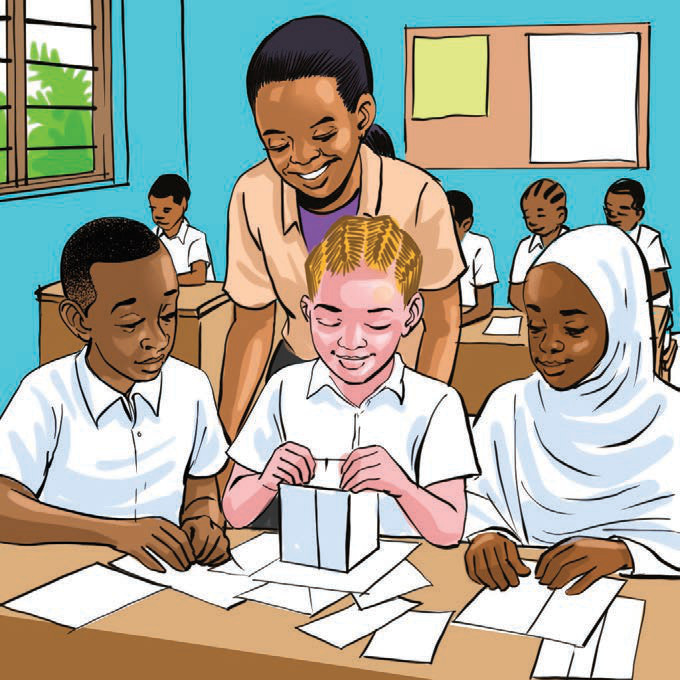
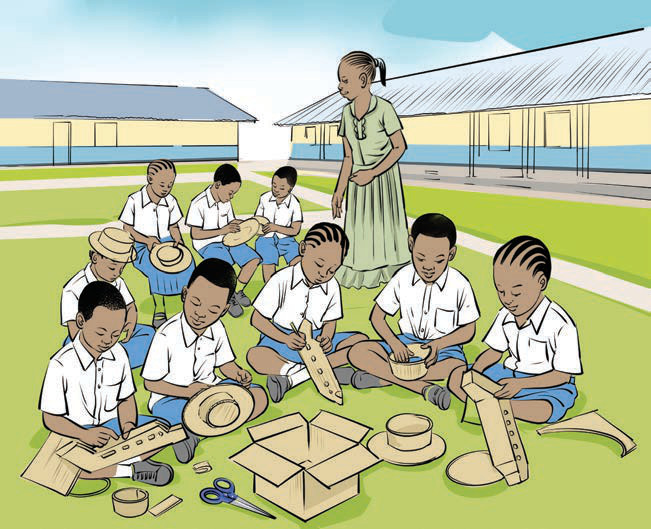
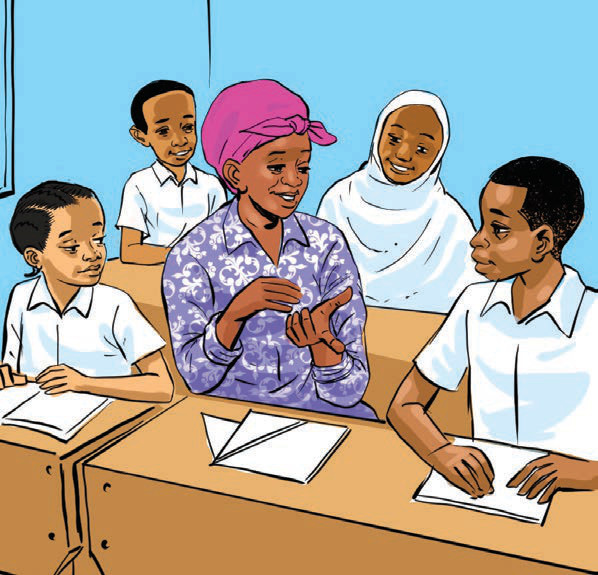

(ii) Making objects
Listening and speaking/observing and signing practice
(a) Study the following pictures of pupils making paper crafts and answer the following questions orally.
Picture 1

Picture 2

Picture 3

Questions
1.What are the instructions for making the craft in Picture 1?
2.What are the instructions for making the craft in Picture 2?
3.What are the instructions for making the craft in Picture 3?
4.Considering the instructions, create one paper craft of your choice.
5.Explain the creative process you followed in creating your paper crafts.